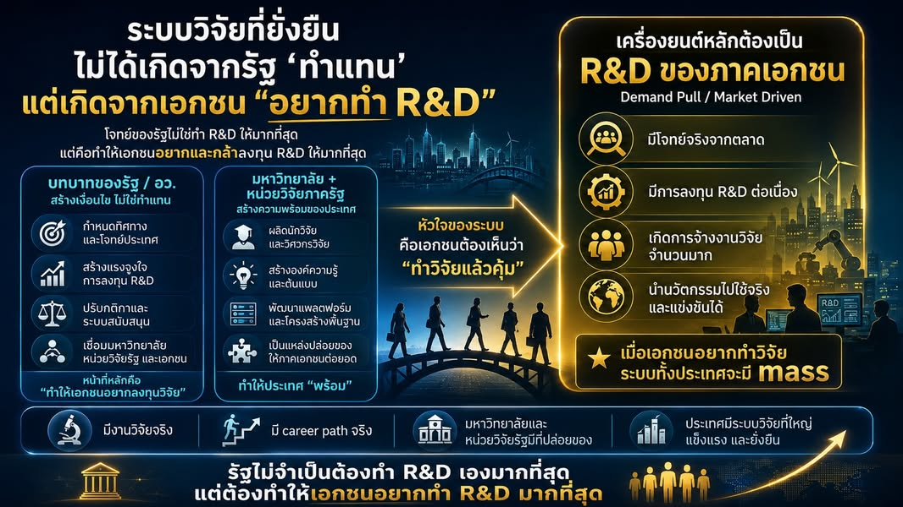

ระบบวิจัยยั่งยืนเกิดเมื่อเอกชนอยากทำ R&D และนักวิจัยมี career path จริง
{kind=link}

AI, quantum, semiconductor, advanced medicine และเทคโนโลยีอนาคตอื่น ๆ เป็นทิศทางสำคัญที่ประเทศไทยควรให้ความสำคัญอย่างจริงจัง แต่ยังมีอีกมิติที่ต้องคิดควบคู่กันไป คือเส้นทางอาชีพของคนทำวิจัย
คำถามจึงไม่ใช่เพียงว่าเราจะเลือกเทคโนโลยีเป้าหมายอะไร แต่คือประเทศไทยจะสร้างระบบงานที่ทำให้คนวิจัยเติบโต ใช้ความเชี่ยวชาญ และมีอนาคตในสายอาชีพได้อย่างไร
ประเทศไทยต้องมี research career ladder นอกมหาวิทยาลัย
ระบบวิจัยที่เข้มแข็งต้องมีตำแหน่งอย่าง staff scientist, research engineer, principal scientist, translational researcher และ research software engineer ซึ่งเป็นอาชีพที่เติบโตได้ด้วยความสามารถด้านวิจัยและเทคนิค โดยไม่จำเป็นต้องย้ายไปเป็นผู้บริหารหรือออกจากงานวิจัยเพื่อให้มีความก้าวหน้า
หากงานวิจัยมีอยู่เฉพาะในมหาวิทยาลัยหรือเกิดตามรอบทุน คนที่ผ่านการฝึกขั้นสูงจะมีทางเลือกจำกัด หลายคนอาจออกจากระบบ ไม่ใช่เพราะไม่รักงานวิจัย แต่เพราะระบบไม่มีตำแหน่งที่มั่นคงและไม่มีบันไดให้ไต่ต่อ
โครงการวิจัยชั่วคราวไม่เท่ากับอาชีพวิจัยระยะยาว
ระบบทุนที่จ้างคนตามอายุโครงการอาจทำให้โครงการเสร็จ แต่ไม่ได้รับประกันว่าจะรักษาความรู้ ความเชี่ยวชาญ และทีมงานไว้ได้ เมื่อทุนสิ้นสุด นักวิจัยย้ายออก ความสามารถที่สะสมมาก็อาจกระจายหายไป และโครงการใหม่ต้องเริ่มสร้างคนซ้ำอีกครั้ง
การสนับสนุนวิจัยจึงควรมองมากกว่าจำนวนโครงการหรือผลผลิตปลายทาง ต้องเห็นด้วยว่าทุนกำลังสร้างกำลังคน เส้นทางเติบโต ระบบความรู้ และ capability ที่องค์กรหรือประเทศใช้ต่อได้หรือไม่
“ทำให้เอกชนอยากทำ R&D” ไม่ใช่ขอให้เอกชนเสียสละ
ภาคเอกชนจะลงทุน R&D อย่างต่อเนื่องเมื่อเห็นว่าเป็นทางเลือกทางธุรกิจที่คุ้มค่า มีตลาดรองรับ มีแรงจูงใจที่เหมาะสม ความเสี่ยงบางส่วนถูกลดลง และมีคนเก่งพอให้จ้างจริง การขอให้บริษัทช่วยชาติด้วยความสมัครใจไม่สามารถสร้าง demand ที่ยั่งยืนได้
หัวใจของระบบจึงอยู่ที่การทำให้บริษัทเห็นว่า “ทำวิจัยแล้วคุ้ม” เมื่อมีโจทย์จริงจากตลาด การลงทุนต่อเนื่อง และโอกาสนำนวัตกรรมไปใช้หรือแข่งขันได้ งานวิจัยจะไม่ใช่กิจกรรมข้างเคียง แต่เป็นส่วนหนึ่งของกลยุทธ์ธุรกิจ
รัฐควรสร้างเงื่อนไข ไม่จำเป็นต้องทำทุกอย่างเอง
บทบาทรัฐคือกำหนดทิศทางและโจทย์ประเทศ สร้างแรงจูงใจการลงทุน ปรับกติกาและระบบสนับสนุน เชื่อมมหาวิทยาลัยกับภาคเอกชน และใช้กลไกต่าง ๆ เพื่อลดความเสี่ยงในช่วงที่เทคโนโลยียังไม่พร้อมเข้าสู่ตลาด
ความสำเร็จไม่ได้วัดว่ารัฐทำ R&D เองมากที่สุด แต่วัดว่ารัฐสามารถทำให้ผู้เล่นจำนวนมากอยากลงทุน สร้างงาน และใช้ความรู้เพื่อแก้โจทย์จริงได้มากเพียงใด
มหาวิทยาลัยและหน่วยวิจัยต้องเป็นแหล่งสร้างคน ความรู้ และต้นแบบ
มหาวิทยาลัยและหน่วยวิจัยภาครัฐมีบทบาทสร้างนักวิจัยและวิศวกร สร้างองค์ความรู้และต้นแบบ พัฒนาแพลตฟอร์มและโครงสร้างพื้นฐาน และเป็นพื้นที่ทดลองสำหรับงานที่ยังเสี่ยงเกินกว่าภาคธุรกิจจะรับทั้งหมด
แต่ปลายทางไม่ควรหยุดที่ paper หรือต้นแบบ หากระบบเชื่อมต่อดี ความรู้และคนจะเคลื่อนไปสู่บริษัท หน่วยงาน และผู้ใช้ที่สามารถนำไปขยายผล ขณะเดียวกันโจทย์จากโลกจริงก็ย้อนกลับมาทำให้งานวิจัยมีความหมายและเข้มแข็งขึ้น
Demand pull สร้างทั้งโจทย์ งาน และแรงดึงดูดคนเก่ง
เมื่อภาคเอกชนมีแรงจูงใจและศักยภาพลงทุน R&D มากขึ้น มหาวิทยาลัยจะมีโจทย์จริงมากขึ้น นักวิจัยจะมีงานหลากหลายขึ้น และประเทศจะมีตลาดแรงงานที่รองรับคนซึ่งลงทุนเรียนรู้ระดับสูง
เมื่อความต้องการมีขนาดมากพอ ระบบจะเริ่มมี mass: บริษัทจำนวนมากมีทีม R&D, career ladder เริ่มชัด, คนเก่งเห็นอนาคตในอาชีพ และความรู้สามารถเคลื่อนจากห้องทดลองไปสู่การใช้งานจริงได้ต่อเนื่อง
เทคโนโลยีเป้าหมายต้องมาพร้อมโครงสร้างที่ทำให้คนอยู่ได้
การประกาศเทคโนโลยีเป้าหมายช่วยรวมทิศทาง แต่ไม่สามารถทดแทนระบบอาชีพ ตลาด งานวิจัยจริง และองค์กรที่พร้อมใช้ความรู้ได้ หากองค์ประกอบเหล่านี้ไม่เกิด ประเทศอาจผลิตคนเก่งแล้วส่งเขาออกจากสายวิจัย หรือสร้างต้นแบบจำนวนมากโดยไม่มีผู้รับช่วงไปใช้
หากเรามีทั้งทิศทางเทคโนโลยีที่ชัด ระบบสนับสนุนที่เหมาะสม ภาคเอกชนที่อยากลงทุน และเส้นทางอาชีพที่ทำให้คนเก่งอยู่ในระบบวิจัยได้จริง ประเทศไทยจะไม่ได้เพียงตามเทคโนโลยีใหม่ แต่จะค่อย ๆ สร้างระบบวิจัยและนวัตกรรมที่เติบโตได้อย่างยั่งยืน
บทความที่เกี่ยวข้อง ยุทธศาสตร์วิจัยต้องเริ่มจากบัณฑิต ไม่ใช่เริ่มและจบที่จำนวนผลงานตีพิมพ์ มองระบบวิจัยจากคนที่ระบบผลิต เส้นทางอาชีพ และความสามารถที่ประเทศต้องใช้จริง